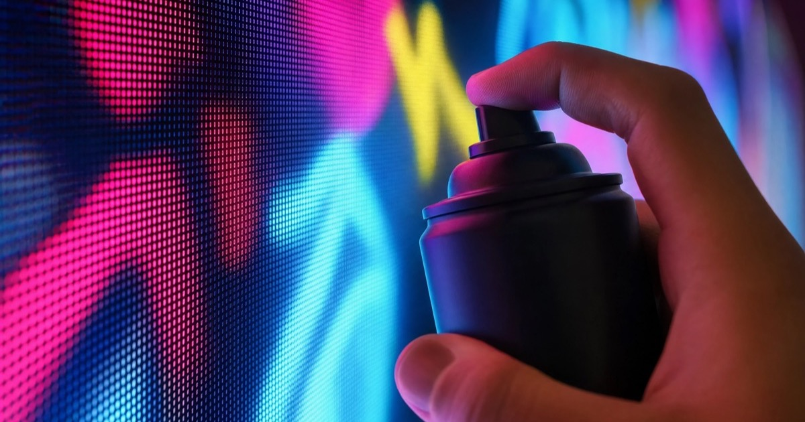

Goldenvoice's first NYC festival.
Three days.
A wall you could move through.
- Dates
- July 22–24, 2016
- Location
- Randall's Island Park
New York City - Producer
- Goldenvoice
(Panorama's inaugural edition) - Setup
- Large-scale LED graffiti walls
+ motion-capture tracking
Goldenvoice's first New York festival, an art-forward lineup on Randall's Island, and a graffiti wall that read the spray can in 3D space.
The inaugural Panorama Festival ran July 22–24, 2016 at Randall's Island Park — the Goldenvoice team (the same producers behind Coachella) bringing a multi-day music + art festival to New York for the first time. The 2016 lineup was anchored by Arcade Fire, Kendrick Lamar and LCD Soundsystem, with The National, Sia, A$AP Rocky, Sufjan Stevens, FKA Twigs, Run The Jewels and others across the three days.
Panorama distinguished itself from the music-festival pack with a heavier art and tech footprint. Our contribution: large-scale interactive graffiti walls with motion-capture tracking — the same digital-graffiti logic of the modern Graffiti+ platform, with the spray can's position and orientation captured precisely in 3D as the writer moved across the wall. Festivalgoers stepped up between sets, picked up the can, and painted onto the LED in real time.
Panorama's inaugural year was a moment for the platform — the first time Graffiti+ ran in front of an audience that scale on US soil, and a proof point that the system holds up at festival footfall.
Eighteen years. Six continents. One idea, done right.
For eighteen years, Graffiti+ has been putting real creative tools in people's hands — in public, at scale, and always with cultural integrity.
Born from the roots of graffiti culture and built for anyone willing to pick up a custom spray can, the platform transforms festival grounds into shared canvases where audiences paint together in real time. From their home in Vancouver to projects across six continents, Graffiti+ has partnered with Panorama, Modelo at Rolling Loud, Outloud Macau, Nike, Louis Vuitton and Samsung to bring authentic, participatory experiences to audiences everywhere.
Randall's Island, 2016. Goldenvoice's first NYC festival. The wall held a crowd for three straight days.